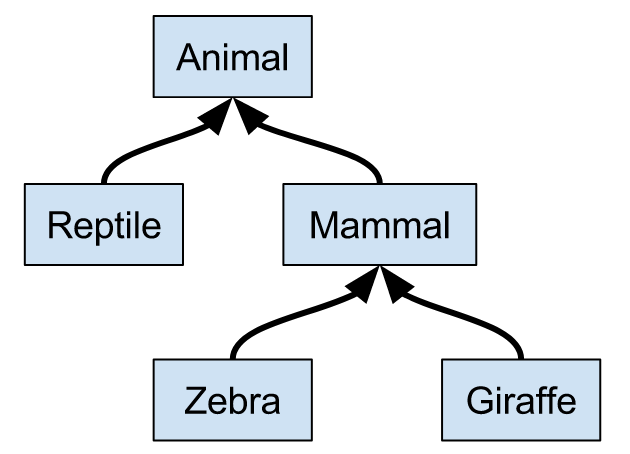

Scala Basics
Functional Programming Principles in Scala 수업을 듣는데 도움이 되기 위해 Scala Exercises에 있는 내용을 정리함.
Terms And Types
|
|
Definitions And Evaluation
|
|
Evaluation strategy
Call-by-value (Scala Normally uses this.)
- Every function argument only once.
12345678sumOfSquares(3, 2 + 2)sumOfSquares(3, 4)square(3) + square(4)3 * 3 + square(4)9 + square(4)9 + 4 * 49 + 1625Call-by-name
- a function argument is not evaluated if the corresponding parameter is unused.
12345678sumOfSquares(3, 2 + 2)square(3) + square(2 + 2)3 * 3 + square(2 + 2)9 + square(2 + 2)9 + (2 + 2) * (2 + 2)9 + 4 * (2 + 2)9 + 4 * 425- Both strategies reduce to the same final values as long as the reduced expression consists of pure functions, and both evaluations terminate.
- The Definition of “Pure Function”
- A pure function is a function that depends only on its declared input parameters and its algorithm to produce its output.
- The Definition of “Pure Function”
Functional Loops
|
|
Lexical Scopes
|
|
|
|
- Automatic imports
- All member of package
scalaandjava.lang. - All member of the singleton object
scala.Predef.
- All member of package
Writing executable programs
|
|
|
|
Nested functions
- It’s good functional programming style to split up a task into many small functions.
- Blocks and visibility
- only visible from within the block.
- shadow definitions of the same names outside the block.
|
|
Tail Recursion
- gcd (tail recursion)
- Tail recursion
- If you have a recursive function that calls itself as its last action, then you can reuse the stack frame of that function.123def gcd(a: Int, b: Int): Int =if (b == 0) a else gcd(b, a % b)
- If you have a recursive function that calls itself as its last action, then you can reuse the stack frame of that function.
- Tail recursion
- If @tailrec is given, and the implementation of gcd were not tail recursive, an error would be issued.
factorial
- becomes bigger and bigger until we end when we finally reduce it to the final value.
12def factorial(n: Int): Int =if (n == 0) 1 else n * factorial(n - 1)factorial (tail recursion)
12345678def factorial(n: Int): Int = {def iter(x: Int, result: Int): Int =if (x == 0) resultelse iter(x - 1, result * x)iter(n, 1)}
Structuring Information
- Data types defined with sealed trait and case classes are called algebraic data types. An algebraic data type definition can be thought of as a set of possible values.
- Algebraic data types are a powerful way to structure information.
- Case class
- toString, equals, and hashCode methods.
- The constructor parameters you specify become properties with getters and setters.
- You no longer have to use ’new’ to create an instance of your class.
- You can use convenient extractors in match/case statements.
|
|
Sealed traits
- A sealed trait can be extended only in the same file.
|
|
Pattern matching
- We need a way to distinguish between the different cases of symbols.
|
|
- When we write
case Rest(duration) => …, we say thatRest(…)is a constructor pattern: it matches all the values of typeRest. - The compiler can leverage this knowledge to warn us if we write code that does not handle all the cases:
Equals
|
|
Enumerations
|
|
- We want to restrict the space of the possible note names and durations to a set of fixed alternatives.
|
|
Higher Order Functions
- Functional languages treat functions as first-class values.
- A function can be passed as a parameter and returned as a result.
Functions that take other functions as parameters or that return functions as results are called higher order functions.
Before
12345678910def sumInts(a: Int, b: Int): Int =if (a > b) 0 else a + sumInts(a + 1, b)def cube(x: Int): Int = x * x * xdef sumCubes(a: Int, b: Int): Int =if (a > b) 0 else cube(a) + sumCubes(a + 1, b)def sumFactorials(a: Int, b: Int): Int =if (a > b) 0 else factorial(a) + sumFactorials(a + 1, b)After (Higher order functions)
12345678def sum(f: Int => Int, a: Int, b: Int): Int =if (a > b) 0else f(a) + sum(f, a + 1, b)def id(x: Int): Int = xdef sumInts(a: Int, b: Int) = sum(id, a, b)def sumCubes(a: Int, b: Int) = sum(cube, a, b)def sumFactorials(a: Int, b: Int) = sum(factorial, a, b)
Anonymous Functions
- Passing functions as parameters leads to the creation of many small functions.
- Sometimes it is tedious to have to define (and name) these functions using def.
- Function literals, which let us write a function without giving it a name. These are called anonymous functions.
|
|
Standard Library
List
- Lists are immutable, recursive.
- Lists are homogeneous: the elements of a list must all have the same type.
|
|
Right associativity.
- A :: B :: C is interpreted as A :: (B :: C).
123456val fruit = "apples" :: ("oranges" :: ("pears" :: Nil))val nums = 1 :: (2 :: (3 :: (4 :: Nil)))val empty = Nilval nums = 1 :: 2 :: 3 :: 4 :: Nilval nums = Nil.::(4).::(3).::(2).::(1)
|
|
|
|
Common Operations on Lists
|
|
Optional Values
|
|
Error Handling
Try
- Try[A] also have map, filter and flatMap. They behave the same as with Option[A], excepted that any exception that is thrown during their execution is converted into a Failure.
123def sqrt(x: Double): Try[Double] =if (x < 0) Failure(new IllegalArgumentException("x must be positive"))else Success(…)Either
- Either[A, B] represents a value that can either be of type A or of type B. It can be decomposed in two cases: Left or Right.
- Either has map and flatMap.
12345678910111213141516171819def sqrt(x: Double): Either[String, Double] =if (x < 0) Left("x must be positive")else Right(…)Right(1).map((x: Int) => x + 1) // Right(2)Left("foo").map((x: Int) => x + 1) // Left("foo")Right(1).filterOrElse(x => x % 2 == 0, "Odd value") // Left("Odd value")def triple(x: Int): Int = 3 * xdef tripleEither(x: Either[String, Int]): Either[String, Int] =x.right.map(triple)tripleEither(Right(1)) // Right(3)tripleEither(Left("not a number")) // Left("not a number")tripleEither(Right(1)).right.get // 3tripleEither(Right(1)).isRight // true
Syntactic Conveniences
String Interpolation
|
|
Tuples
|
|
Functions as Objects
- The function type A => B is just an abbreviation for the class scala.Function1[A, B]
|
|
|
|
|
|
|
|
FOR Expressions
|
|
|
|
Method’s Parameters
|
|
|
|
|
|
Type Aliases
|
|
Object Oriented Programming
Class
|
|
Methods
|
|
Data Abstraction
|
|
- The Client’s View
- Clients observe exactly the same behavior in each case.
- This ability to choose different implementations of the data without affecting clients is called data abstraction.
Self Reference, Preconditions, Assertions
|
|
Constructors
A class implicitly introduces a constructor. This one is called the
primary constructorof the class.Auxiliary constructors1234class Rational(x: Int, y: Int) {def this(x: Int) = this(x, 1)...}
Classes and Substitutions
|
|
- The following three substitutions happen
- the substitution of the formal parameters y1, …, ym of the function f by the arguments w1, …, wm,
- the substitution of the formal parameters x1, …, xn of the class C by the class arguments v1, …, vn,
- the substitution of the self reference this by the value of the object new C(v1, …, vn).
Operators
- An identifier can be:
- Alphanumeric: starting with a letter.
- Symbolic: starting with an operator symbol, followed by other operator symbols.
- The underscore character ‘_’ counts as a letter.
- Alphanumeric identifiers can also end in an underscore, followed by some operator symbols.
|
|
Precedence Rules
- The precedence of an operator is determined by its first character.
- The following table lists the characters in increasing order of priority precedence:
12345678910(all letters)|^&< >= !:+ -* / %(all other special characters)
Abstract Classes
|
|
- IntSet is called the superclass of Empty and NonEmpty.
- Empty and NonEmpty are subclasses of IntSet.
- The base classes of NonEmpty are IntSet and Object.
|
|
|
|
Object Definitions
- This defines a singleton object named Empty.
- Singleton objects are values, so Empty evaluates to itself.
|
|
Dynamic Binding
- The code invoked by a method call depends on the runtime type of the object that contains the method.
|
|
Trait
- A trait is declared like an abstract class, just with trait instead of abstract class.
- On the other hand, traits cannot have (value) parameters, only classes can.
|
|
Scala’s Class Hierarchy

- Top Types
Any- The base type of all types
- Methods: ==, !=, equals, hashCode, toString
AnyRef- The base type of all reference types
- Alias of java.lang.Object
AnyVal- The base type of all primitive types
- Bottom Type
Nothing- To signal abnormal termination
- As an element type of empty collections
The Null Type
- Every reference class type also has null as a value.
nullisNull.
123val x = null // x: Nullval y: String = null // y: Stringval z: Int = null // error: type mismatch
Imperative Programming
- Until now, our programs have been side-effect free.
- Therefore, the concept of time wasn’t important.
- For all programs that terminate, any sequence of actions would have given the same results.
- This was also reflected in the substitution model of computation.
Reminder: Substitution Model
|
|
The call iterate(1, square, 3) gets rewritten as follows.
1234567iterate(1, square, 3)if (1 == 0) 3 else iterate(1 - 1, square, square(3))iterate(0, square, square(3))iterate(0, square, 3 * 3)iterate(0, square, 9)if (0 == 0) 9 else iterate(0 - 1, square, square(9))9Rewriting can be done anywhere in a term, and all rewritings which terminate lead to the same solution.
- This is an important result of the λ-calculus, the theory behind functional programming.
Stateful Object
- An object has a state if its behavior is influenced by its history.
Implementation of State
|
|
State in Objects
|
|
Identity and Change
|
|
Operational Equivalence
- The precise meaning of “being the same” is defined by the property of operational equivalence.
|
|
Imperative Loops
While-Loops
123456def power(x: Double, exp: Int): Double = {var r = 1.0var i = expwhile (i > 0) { r = r * x; i = i - 1 }r}For-Loops
1for (i <- 1 until 3) { print(i + " ") }12345678// foreach is defined with elements of type A.def foreach(f: A => Unit): Unit = ..."abc".foreach(i => println(s"$i"))for (i <- 1 until 3; j <- "abc") println(s"$i $j")// Translates to(1 until 3) foreach (i => "abc" foreach (j => println(s"$i $j")))
Classes VS Case Classes
Creation and manipulation
1234567891011121314151617181920212223class BankAccount {private var balance = 0def deposit(amount: Int): Unit = {if (amount > 0) balance = balance + amount}def withdraw(amount: Int): Int =if (0 < amount && amount <= balance) {balance = balance - amountbalance} else throw new Error("insufficient funds")}case class Note(name: String, duration: String, octave: Int)// A class instance requires new.val aliceAccount = new BankAccountval c3 = Note("C", "Quarter", 3)// The case class constructor parameters are promoted to members.c3.name // "C"Equality
1234567891011// The value of BankAccount can change over time whereas the value of a Note is immutable.val aliceAccount = new BankAccountval bobAccount = new BankAccountaliceAccount == bobAccount // false//val c3 = Note("C", "Quarter", 3)val cThree = Note("C", "Quarter", 3)c3 == cThree // truePattern matching
- Pattern matching can be used to extract information from a case class
123c3 match {case Note(name, duration, octave) => s"The duration is $duration"}Extensibility
- A class can extend another class, whereas a case class can not extend another case class.
Case classes encoding
- Case classes are just a special case of classes, whose purpose is to aggregate several values into a single value.
- When we define a case class, the Scala compiler defines a class enhanced with some more methods and a companion object.
12345678910111213141516171819202122232425262728293031323334353637383940414243444546474849505152535455case class Note(name: String, duration: String, octave: Int)class Note(_name: String, _duration: String, _octave: Int) extends Serializable {// Constructor parameters are promoted to membersval name = _nameval duration = _durationval octave = _octave// Equality redefinitionoverride def equals(other: Any): Boolean = other match {case that: Note =>(that canEqual this) &&name == that.name &&duration == that.duration &&octave == that.octavecase _ => false}def canEqual(other: Any): Boolean = other.isInstanceOf[Note]// Java hashCode redefinition according to equalityoverride def hashCode(): Int = {val state = Seq(name, duration, octave)state.map(_.hashCode()).foldLeft(0)((a, b) => 31 * a + b)}// toString redefinition to return the value of an instance instead of its memory addresoverride def toString = s"Note($name,$duration,$octave)"// Create a copy of a case class, with potentially modified field valuesdef copy(name: String = name, duration: String = duration, octave: Int = octave): Note =new Note(name, duration, octave)}object Note {// Constructor that allows the omission of the `new` keyworddef apply(name: String, duration: String, octave: Int): Note =new Note(name, duration, octave)// Extractor for pattern matchingdef unapply(note: Note): Option[(String, String, Int)] =if (note eq null) Noneelse Some((note.name, note.duration, note.octave))}val c3 = Note("C", "Quarter", 3)c3.toString // "Note(C,Quarter,3)"val d = Note("D", "Quarter", 3)c3.equals(d) // falseval c4 = c3.copy(octave = 4)c4.toString // "Note(C,Quarter,4)"
Polymorphic Types
Type parameter
12345678910abstract class Set[A] {def incl(a: A): Set[A]def contains(a: A): Boolean}class Empty[A] extends Set[A] {…}class NonEmpty[A](elem: A, left: Set[A], right: Set[A]) extends Set[A] {…}Generic functions
1234def singleton[A](elem: A) = new NonEmpty[A](elem, new Empty[A], new Empty[A])singleton[Int](1)singleton[Boolean](true)Type inference
- The Scala compiler can usually deduce the correct type parameters from the value arguments of a function call.
- So, in most cases, type parameters can be left out.
12singleton(1)singleton(true)Types and Evaluation
- We can assume that all type parameters and type arguments are removed before evaluating the program.
- This is also called
type erasure.- include Java, Scala, Haskell, ML, OCaml
- not include C++, C#, F#
Polymorphism
- In programming it means that
- the function can be applied to arguments of many types, or
- the type can have instances of many types.
- We have seen two principal forms of polymorphism:
- subtyping: instances of a subclass can be passed to a base class
- generics: instances of a function or class are created by type parameterization.

12345678910111213trait Animal {def fitness: Int}trait Reptile extends Animaltrait Mammal extends Animaltrait Zebra extends Mammal {def zebraCount: Int}trait Giraffe extends Mammal- In programming it means that
Type bounds
A <: Bmeans: A is a subtype of B. (Upper bound)A >: Bmeans: A is a supertype of B, or B is a subtype of A. (Lower bound)
12345678910// A can be instantiated only to types that conform to Animal.def selection[A <: Animal](a1: A, a2: A): A =if (a1.fitness > a2.fitness) a1 else a2// A could be one of Reptile, Animal, AnyRef, or Any.A >: Reptile// Mixed bound// A any type on the interval between Zebra and Animal.A >: Zebra <: AnimalCovariance
123456789val zebras: Array[Zebra] = Array(new Zebra)val mammals: Array[Mammal] = zebrasmammals(0) = new Giraffeval zebra: Zebra = zebras(0)// error at line 2:// type mismatch;// found: Array[Zebra]// required: Array[Mammal]- A type that accepts mutations of its elements should not be covariant.
- But immutable types can be covariant, if some conditions on methods are met.
Definition of variance
C[T]is a parameterized type andA,Bare types such thatA <: B.Cis covariant,C[A] <: C[B]class C[+A] { … }
Cis contravariantC[A] >: C[B]class C[-A] { … }
Cis nonvariant.- neither
C[A]norC[B]is a subtype of the other. class C[A] { … }
- neither
If
A2 <: A1andB1 <: B2, thenA1 => B1 <: A2 => B2.Covariant type parameters can only appear in method results.
- Contravariant type parameters can only appear in method parameters.
- Invariant type parameters can appear anywhere.
123trait Function1[-T, +U] {def apply(x: T): U}Contravariance example
1234// Vet[Mammal] <: Vet[Zebra]trait Vet[A] {def treat(a: A): Unit // Treats an animal of type `A`}Making classes covariant
1234567// This does not work.trait Stream[+T] {def prepend(elem: T): Stream[T] = Stream.cons(elem, this)}// Variance-correct (use lower bound)def prepend[U >: T](elem: U): Stream[U] = Stream.cons(elem, this)- This passes variance checks, because:
covarianttype parameters may appear in lower bounds of method type parameterscontravarianttype parameters may appear in upper bounds of method
- This passes variance checks, because:
Lazy Evaluation
|
|
It constructs all prime numbers between 1000 and 10000 in a list, but only ever looks at the first two elements of that list.
Stream- Streams are similar to lists, but their tail is evaluated only on demand.
1val xs = Stream.cons(1, Stream.cons(2, Stream.empty))Stream ranges
123def streamRange(lo: Int, hi: Int): Stream[Int] =if (lo >= hi) Stream.emptyelse Stream.cons(lo, streamRange(lo + 1, hi))- streamRange(start, end) returns a single object of type Stream with start as head element.
- The other elements are only computed when they are needed, where “needed” means that someone calls tail on the stream.
123def listRange(lo: Int, hi: Int): List[Int] =if (lo >= hi) Nilelse lo :: listRange(lo + 1, hi)- listRange(start, end) will produce a list with end - start elements and return it.
- streamRange(start, end) returns a single object of type Stream with start as head element.
Methods of streams
- Stream supports almost all methods of List.
1234(streamRange(1000, 10000) filter isPrime)(1)// #:: produces a stream.x #:: xs == Stream.cons(x, xs)
|
|
- the type of
tlstarts with=>. In such a case, this parameter is evaluated by following the rules of the call-by-name model.
|
|
Lazy evaluation
- The proposed Stream implementation suffers from a serious potential performance problem: If tail is called several times, the corresponding stream will be recomputed each time.
- This problem can be avoided by storing the result of the first evaluation of tail and re-using the stored result instead of recomputing tail.
- We call this scheme lazy evaluation (as opposed to by-name evaluation in the case where everything is recomputed, and strict evaluation for normal parameters and val definitions.)
1234567lazy val x = exprdef cons[T](hd: T, tl: => Stream[T]) = new Stream[T] {def head = hdlazy val tail = tl…}12345678val builder = new StringBuilderval x = { builder += 'x'; 1 }lazy val y = { builder += 'y'; 2 }def z = { builder += 'z'; 3 }z + y + x + z + y + x // 12builder.result() // "xzyz"
Type Classes
Parameterization of sort
- The most flexible design is to make the function
insertionSortpolymorphic and to pass the comparison operation as an additional parameter.
12345678910111213141516171819202122def insertionSort[T](xs: List[T])(lessThan: (T, T) => Boolean) = {def insert(y: Int, ys: List[Int]): List[Int] =ys match {…case z :: zs =>if (lessThan(y, z)) y :: z :: zselse …}xs match {…case y :: ys => insert(y, insertionSort(ys)(lessThan))}}val nums = List(-5, 6, 3, 2, 7)val fruit = List("apple", "pear", "orange", "pineapple")insertionSort(nums)((x: Int, y: Int) => x < y)insertionSort(fruit)((x: String, y: String) => x.compareTo(y) < 0)// Parameter types can be inferred.insertionSort(nums)((x, y) => x < y)- The most flexible design is to make the function
Parameterization with ordered
12345678910// scala.math.Ordering[T] (standard library that represents orderings.)def insertionSort[T](xs: List[T])(ord: Ordering[T]): List[T] = {def insert(y: Int, ys: List[Int]): List[Int] =… if (ord.lt(y, z)) …… insert(y, insertionSort(ys)(ord)) …}insertionSort(nums)(Ordering.Int)insertionSort(fruits)(Ordering.String)Implicit parameters
12345678910def insertionSort[T](xs: List[T])(implicit ord: Ordering[T]): List[T] = {def insert(y: Int, ys: List[Int]): List[Int] =… if (ord.lt(y, z)) …… insert(y, insertionSort(ys)) …}// The compiler will figure out the right implicit to pass based on the demanded type.insertionSort(nums)insertionSort(fruits)- The compiler will search an implicit definition that
- is marked implicit
- has a type compatible with T
- is visible at the point of the function call, or is defined in a companion object associated with T.
- The compiler will search an implicit definition that
Type classes
- The combination of types parameterized and implicit parameters is also called type classes.
|
|